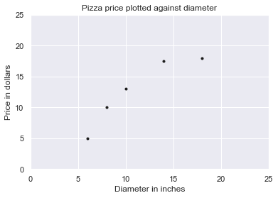
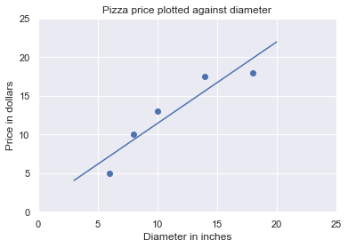

Basics of Linear Regression
A simple linear regression model can be used to build a relation between an explanatory variable and one target variable. it tries to generate the system of line that can fit in the data with minimum loss. It tries to calculate coefficient and intercept of the line.
Lets consider you want to predict the price of a pizza. So while predicting the price the variable that comes into your mind is the size of pizza. For now don’t consider other features like thickness of pizza and the type of pizza etc. Lets build a relation between size of pizza and the price of pizza using this dummy data.
Diameter Price 6 5.0 8 10.0 10 13.0 14 17.5 18 18.0
Lets visualize the data using using matplot.
import matplotlib.pyplot as plt
import seaborn as sns
sns.set()
plt.figure()
plt.title('Pizza price plotted against diameter')
plt.xlabel('Diameter in inches')
plt.ylabel('Price in dollars')
plt.plot(X, y, 'k.')
plt.axis([0, 25, 0, 25])
plt.grid(True)
plt.show()

We can see from the graph of the training data that there is a positive relationship between the diameter of a pizza and its price, which should be corroborated by our own pizza-eating experience. As the diameter of a pizza increases, its price generally increases too. The following pizza-price predictor program models this relationship using linear regression
Create and fit the model
from sklearn.linear_model import LinearRegression
model = LinearRegression()
model.fit(X, y)
LinearRegression(copy_X=True, fit_intercept=True, n_jobs=None, normalize=False)
x_test = [[3],[20]]
pred = model.predict(x_test)
print('prediction:\n{}'.format(pred))
prediction:
[[ 4.05818966]
[21.97413793]]
plt.figure()
plt.title('Pizza price plotted against diameter')
plt.xlabel('Diameter in inches')
plt.ylabel('Price in dollars')
plt.scatter(X, y)
plt.plot(x_test, pred)
plt.axis([0, 25, 0, 25])
plt.grid(True)
plt.show()

The fit method of LinearRegression learns the parameters of the following model for simple linear regression: ` y = a + bx`
Ordinary Least Square From the above equation we can see that to calulate the linear regression we need to calculate the value of two variable a and b.
This can be solve by calculating the variance and co-variance of the x and y.
a and b can be calculated using :
a = cov(x,y) / var(x,y)
now we can calucate b easily.
Using above data:
xbar = (6 + 8 + 10 + 14 + 18) / 5
variance = ((6 - xbar)**2 + (8 - xbar)**2 + (10 - xbar)**2 + (14 -xbar)**2 + (18 - xbar)**2) / 4
print(variance)
23.2
import numpy as np
np.var([6, 8, 10, 14, 18], ddof=1)
xbar = (6 + 8 + 10 + 14 + 18) / 5
ybar = (7 + 9 + 13 + 17.5 + 18) / 5
cov = ((6 - xbar) * (7 - ybar) + (8 - xbar) * (9 - ybar) + (10 -xbar) * (13 - ybar) +
(14 - xbar) * (17.5 - ybar) + (18 - xbar) * (18 - ybar)) /4
print(cov)
22.65
beta = 22.65 /23.2
print(beta)
0.9762931034482758
alpha = ybar - beta*xbar
print(alpha)
1.9655172413793114